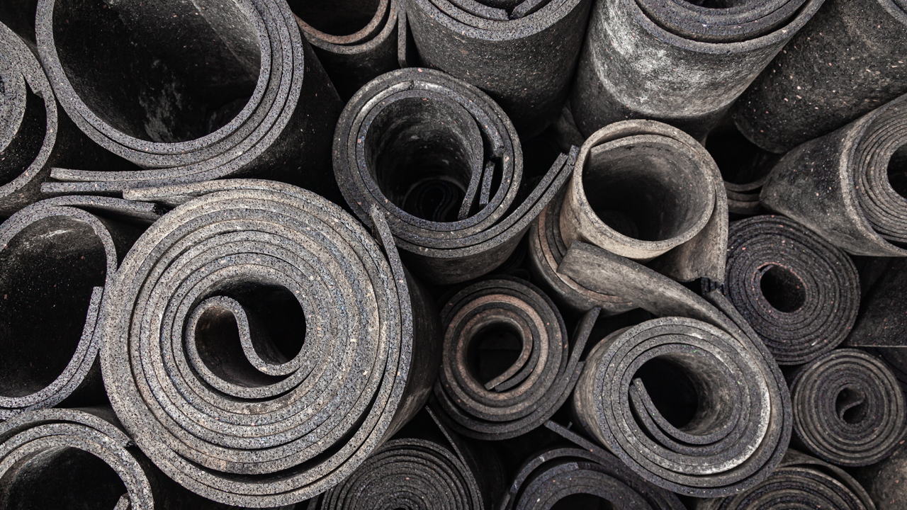

Home / Blog / Consumables Supply Planning
SUPPLY PLANNINGSetting up a retread line is a one-time decision. Keeping it fed with cushion gum, tread rubber, cement, and curing envelopes is a permanent one — and it's a different planning problem than either the setup budget or the casing side of the business.
Published September 16, 2026 · Good Hope Retreaders

Most of the planning conversation around bringing retreading in-house happens before the line ever runs — what the equipment costs, what casing credits are worth, what the payback period looks like. All of that matters, and we've covered it: what it costs to equip a shop, how casing credits work, and what changes when you own the line instead of routing tires through a franchised network. What gets far less attention is the question that starts the day the line goes live and never stops: what does this shop actually consume, cure after cure, and how do you keep it supplied without either running dry or sitting on stock that's aged past its window?
That's a genuinely different planning problem than either setup cost or casing economics. Equipment is a capital purchase you make once. Casings are an asset the fleet already owns and manages through its own maintenance program. Consumables are the one category that has to keep arriving, on a schedule, indefinitely, in the right quantities, before the material itself goes stale on the shelf. Get it right and the line runs at the pace the fleet needs. Get it wrong and equipment that cost real money to install sits idle waiting on materials.
A precure retread line's bill of consumable materials is narrower than most people assume, but every item on it gets used up on every tire, not just occasionally. Reference material on retreading rubber compounds and cements describes the core inputs consistently: tread compound (supplied as camelback or precured tread), cushion gum, and vulcanizing cement, alongside the fractional cord fabric and envelope materials that support the cure (GlobalSpec, "Chapter 12: Retreading Rubber Compounds and Cements"). In the categories our own shops actually order in:
The full catalog, with what each material actually does in the process, is on our consumables page. The point for planning purposes is simpler: everything above is either consumed on every single tire or wears down at a predictable rate tied to volume — which means, unlike equipment, none of it is a one-time purchase decision.
Every material above draws down roughly in proportion to how many tires actually go through the line — more casings built, more cushion gum and tread rubber consumed; more repairs, more extruder compound and worn skiving tools. That sounds obvious, but it's the part shops new to running their own line tend to underweight: consumables aren't a supply closet you top up when someone notices it's low. They're an input to a manufacturing process, and the reorder point has to be set against two things at once — how fast the shop is actually running through stock, and how long it takes a fresh order to arrive.
That second variable — lead time — is exactly where a shop's choice of supplier stops being a pure price decision. A long cross-border lead time forces a shop to either carry a large safety-stock buffer to cover it, or risk a gap in production waiting on the next order. Neither is free: a bigger buffer ties up more working capital and runs a real risk of aging past its usable window (more on that below), while a thin buffer against a long lead time means a single delayed shipment can idle the buffer, the tread builder, and the curing chamber all at once.
The obvious fix for lead-time risk — just order more, further ahead — runs straight into a constraint we've covered in detail elsewhere: tread rubber and cushion gum are uncured rubber compounds with a real, published shelf life, not indefinitely stable shop stock. The Tire Industry Association's own storage guidance puts the baseline at roughly six months under correct dry, cool, dark storage, and individual manufacturers publish tighter windows for specific cushion gum products — some as short as three to four months from date of manufacture. Storage temperature moves that clock significantly: material held between 80–95°F loses roughly a quarter of its shelf life, and 95–110°F can cut it by half or more. We go through the full numbers, by material and by temperature band, in our storage and shelf-life guide — worth reading alongside this one, because it sets the upper bound on how far ahead a shop can responsibly buy.
Put the two constraints together and the planning problem comes into focus: a shop needs enough buffer stock to absorb its supplier's lead time, but not so much that material is sitting past its window by the time it reaches the buffer. That's a narrower operating band than either "order a lot to be safe" or "order just in time" alone — and it's narrower still for a supplier whose lead time is long relative to the six-month baseline, because more of that window gets eaten by transit and dock time before the material even reaches the shop's shelf.
It's worth being honest that this isn't a purely theoretical risk a shop is insuring against. Trade press has documented real material-supply strain in the retreading sector before: a 2022 Modern Tire Dealer report on retreaders navigating that year's conditions quoted Dennis Beaudette, vice president of Syracuse Retreaders LLC, saying retreads were in high demand but that the shop could "keep up during the slower season" while "the busy season is overwhelming" — a strain the piece ties partly to rubber supply issues layered on top of labor shortages (Modern Tire Dealer, "Retreaders Held Back by Supply Issues"). More recent trade coverage of the sector heading into 2026 describes a similar mix of pressures — rising operating costs, ongoing labor shortages, and competition from low-cost imported new tires — as the conditions retreaders navigated through 2025 (Modern Tire Dealer, "U.S. Retreaders Navigate Rising Costs, Low-Cost Imports in 2025, Eye Growth in 2026").
The raw-material side has its own documented pressure independent of the retreading sector specifically. Natural rubber — the base input for tread compound and cushion gum — has been running a genuine global supply deficit: market coverage in 2026 puts the shortfall at roughly 400,000 tonnes, driven by aging plantations in Thailand, Indonesia, Malaysia, and Vietnam (together close to 80% of global output) combined with weather-shortened tapping seasons (ProcurementResource, "Natural Rubber Prices Rise on Global Supply Deficit and Strong Tyre Demand"). Commodity pricing trackers show the effect directly: Chinese natural rubber pricing was running roughly 30% above the prior year as of mid-2026, and Indian RSS3 rubber climbed a similar amount year over year through August 2026 (SunSirs commodity data, cross-referenced against ProcurementResource's July 2026 pricing report).
None of that is a claim that consumables are hard to get right now, or that any particular shop should expect a shortage. It's the opposite point: these materials sit on a real global commodity chain with documented volatility, which means "the shop that has the equipment installed" and "the shop that stays supplied" aren't automatically the same shop. Supply planning has to account for a raw-material market that moves, not just a stable price list.
Here's the structural point underneath all of this, and it's worth being precise about what it is and isn't. It isn't a claim that any specific branded or franchised retread program is anticompetitive, and it isn't built on an invented fleet example. It's the same general logic that applies to any manufacturing operation with a single, high-volume, repeatable input: when one supplier controls both the equipment and the ongoing materials that equipment depends on, that supplier's own priorities — allocation during a tight market, pricing pace, order minimums, how quickly a backorder gets filled — sit between the fleet and its own line running. That's a reasonable arrangement for a fleet running low enough volume that a single relationship is simplest. It becomes a real constraint the moment a fleet's own build volume is large enough that a gap in supply means idle equipment and a missed tire-replacement schedule, not just an inconvenience.
The practical takeaway isn't "distrust your supplier" — it's "evaluate your supplier on continuity, not just on unit price." A quote that's a few percent cheaper doesn't help if the lead time behind it is long enough to force a much bigger safety-stock buffer, or if that supplier's own allocation priorities put a smaller account behind larger ones when a raw-material squeeze like the one described above actually hits.
We're a manufacturer-direct supplier of retread machinery, consumables, components, and repair tools — not a retread franchise, and not an operator running a shop on your behalf. Our role in the ongoing-supply question specifically: we stock cushion gum, precured tread rubber, bonding cement, curing envelopes, and repair materials in our own Ontario warehouse and ship direct to your facility with transparent all-in Canadian pricing — no quote-wall guessing, and no routing your ongoing order through a franchised plant's own priorities. That local stock is exactly what shortens the lead time a shop's reorder point has to be planned against, which is the lever that actually matters once the line is running. Setting up the line itself is covered in our shop setup cost breakdown; keeping it supplied is what this page is for.
Tell us your build volume and tire size mix and we'll help you size a reorder schedule and starting buffer that keeps your line running — transparent all-in Canadian pricing, shipped from our Ontario warehouse.
Talk to us about your consumables order →Send us your requirements and we'll get back to you within 24 hours with pricing and lead times — no obligation.